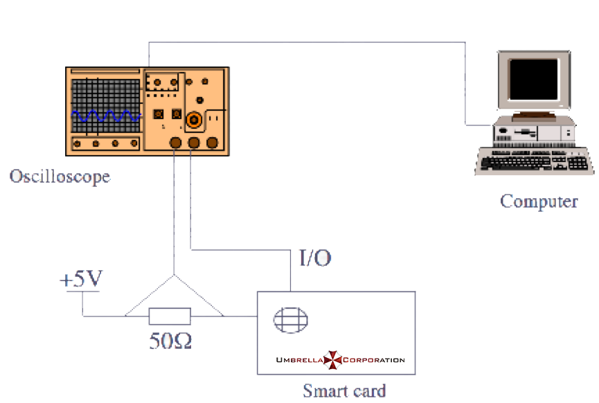

RSA Side Channel Attack
An energy analysis attack (side channel attack) is a password attack method that can obtain secret information from a cryptographic device. Instead of His attack method is different: this attack uses the energy consumption characteristics of the cryptographic device, not the mathematical characteristics of the cryptographic algorithm. An energy analysis attack is a non-intrusive attack that allows an attacker to easily purchase the equipment needed to implement an attack: this type of attack poses a serious threat to the security of cryptographic devices such as smart cards.
Energy analysis attacks are a very important part of the security arena, and we will only discuss them briefly here.
Energy analysis attacks are divided into: - Simple Energy Analysis Attack (SPA), which allows visual analysis of energy traces, which can be viewed with the naked eye. - Differential Energy Analysis Attack (DPA), based on correlation coefficients between energy traces.
Attack conditions
The attacker can obtain side channel information related to encryption and decryption, such as energy consumption, computing time, electromagnetic radiation, and the like.
example
Here we take the Hack in the card I of HITB 2017 as an example.
The topic gives the public key file publickey.pem, ciphertext, the circuit diagram for measuring the smart card power, and the power consumption consumed by the smart card during the decryption (given [trace] via the online website (http://47.74 .147.53:20015/index.html)).

Ciphertext:
014b05e1a09668c83e13fda8be28d148568a2342aed833e0ad646bd45461da2decf9d538c2d3ab245b272873beb112586bb7b17dc4b30f0c5408d8b03cfbc8388b2bd579fb419a1cac38798da1c3da75dc9a74a90d98c8f986fd8ab8b2dc539768beb339cadc13383c62b5223a50e050cb9c6b759072962c2b2cf21b4421ca73394d9e12cfbc958fc5f6b596da368923121e55a3c6a7b12fdca127ecc0e8470463f6e04f27cd4bb3de30555b6c701f524c8c032fa51d719901e7c75cc72764ac00976ac6427a1f483779f61cee455ed319ee9071abefae4473e7c637760b4b3131f25e5eb9950dd9d37666e129640c82a4b01b8bdc1a78b007f8ec71e7bad48046
Analysis
Since the site only gives an energy trace, it can be concluded that this is a Simple channel analysis (SPA) attack. Then we can directly obtain the key d of the RSA decryption process by observing the high and low levels of the energy trace. The theoretical basis for RSA attacks by SPA comes from the fast power remainder algorithm included in RSA.
The fast power algorithm is as follows
- When b is even, $a^b \bmod c = ({a^2}^{b/2}) \bmod c$.
- When b is an odd number, $a^b \bmod c = ({a^2}^{b/2} \times a) \bmod c$.
The corresponding C code is implemented as:
int PowerMod(int a, int b, int c)
{
int ans = 1;
a = a % c;
while(b>0) {
If(b % 2 == 1) // When b is odd, the following instructions will be executed more
years = (years * a)% c;
b = b/2;
a = (a * a) % c;
}
return years;
}
Since the value of the exponent is judged bit by bit during the calculation of the fast power, and different operations are taken, the value of d can be restored from the energy trace (from the above, the directly obtained value is the binary value of d) reverse order).
note:
> Sometimes modular multiplication may also be multiplied from high to low. Here is the multiplication from the low to the high.

The script that restores d can be given as follows:
f = open('./data.txt')
data = f.read().split(",")
print('point number:', len(data))
Start_point = 225 # Point to start analysis
Mid = 50 # sampling point interval
Fence = 228 # high and low level dividing line
bin_array = []
for point_index in range(start_point, len(data), mid):
if float(data[point_index]) > fence:
bin_array.append(1)
else:
bin_array.append(0)
bin_array2 = []
flag1 = 0
flag2 = 0
for x in bin_array:
if x:
if flag1:
flag2 = 1
else:
flag1 = 1
else:
if flag2:
bin_array2.append(1)
else:
bin_array2.append(0)
flag1 = 0
flag2 = 0
# d_bin = bin_array2 [:: - 1]
d_bin = bin_array2
d = "".join(str(x) for x in d_bin)[::-1]
print(d)
d_int = int(d,2)
print(d_int)
References
- Mangard, S., Oswald, E., Popp, T., Feng Dengguo, Zhou Yongbin, & Liu Jiye. (2010). Energy Analysis Attack.